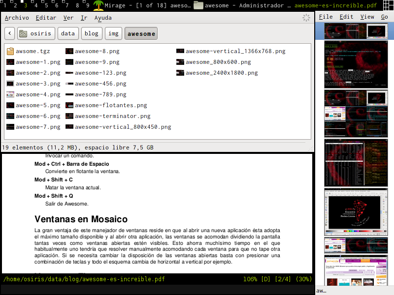
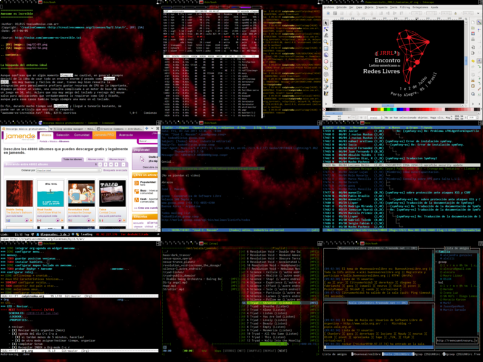
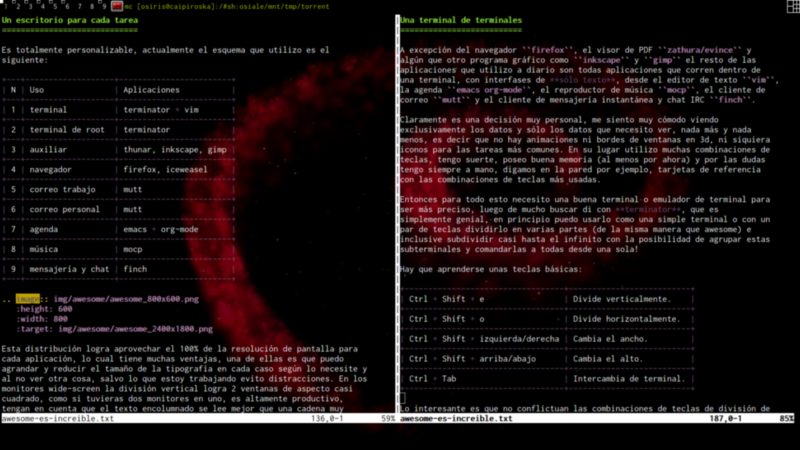
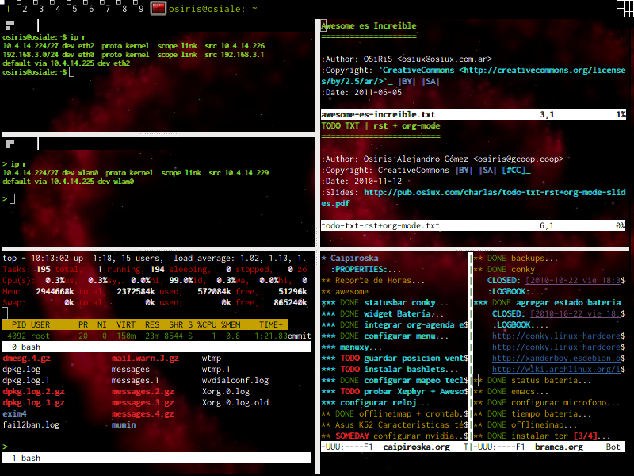

Awesome es Increíble
ABSOLUTELLY NO WARRANTY | CC-BY-SA | OSiUX | .git
La búsqueda del entorno ideal
Aunque confieso que en algún momento Compiz 1 me cautivó, en general siempre desistí de la idea de usar todo un entorno enorme y pesado como Gnome 2 y KDE 3, son muy buenos y fáciles de usar, tienen muy bien resuelta la integración pero persolamente prefiero gastar recursos de CPU en lo importante, digamos procesar un video, una consulta complicada a un motor de base de datos, un juego en 3d, etc. Aclaro que soy muy amigo del teclado y reniego del mouse salvo para aplicaciones que verdaderamente lo requieran como CAD y Diseño, aunque para esos casos también tengo siempre una mano en el teclado.
En fin, durante mucho tiempo usé fluxbox 4 y llegué a tunearlo bastante, se puede ver un artículo que escribí al respecto:
http://osiux.com.ar/fluxbox-gtk2-root-tail-gkrellm.txt
Pero luego me di cuenta que pasaba mucho tiempo jugando con la ubicación de las ventanas, así que emprendí la búsqueda de una alternativa tan liviana y minimalista como lo era fluxbox, así llegué a awesome 5 que significa increíble, se pronuncia osom o algo así, yo prefiero decirle aguesome.
Existen otros similares a Awesome que también probé:
Lo más compacto posible
Una de las mejores ventajas de este tipo de manejadores de ventanas es que al eliminar los bordes de ventanas y barra de menú se maximina el espacio para las aplicaciones y se visualiza lo importante, que es el contenido de la aplicación, ya sean los datos en sí como también la interfase, también ayuda achicar el tamaño de la fuente. Sumado a esto luego en la mayoría de las aplicaciones existe la posibilidad de ocultar barras de herramientas o al menos sólo mostrar iconos pequeños o sólo texto y de esta manera aumentar aún más el espacio de trabajo. Lo mejor es ver una imagen comparativa.

El teclado es más rápido
El primero contacto puede parecer complicado, especialmente si no se aprenden
algunas teclas básicas, la clave está en leer el manual man awesome ahí se
listan las principales operaciones a realizar. Si bien se puede usar el mouse
para la mayoría de las tareas, existen combinaciones de teclas que aceleran
muchísimo moverse de un escritorio a otro como también cambiar la ubicación de
las ventanas.
Si nos aprendemos las teclas principales de una aplicación ya no es necesario
mostrar los iconos de esas acciones, ahorrando así espacio para ver sólo el
trabajo que estamos realizando. Realmente cuando uno se acostumbra a usar
teclas rápidas, sucede que necesito hacer algo y este algo sucede casi mágicamente por que mis manos están entrenadas a realizar este algo
mediante la combinación de un par de teclas que las presiono casi sin
pensarlas, de hecho cuando alguien me pregunta cómo hiciste eso?, me cuesta
unos segundos responder y describir la secuencia que tal vez sea algo como
Ctrl + Shift + e.
Las teclas más importantes son:
Modkey | Es la más importante, se combina con el resto para distintas acciones |
Modkey + [0-9] | Cambiar de escritorio, por ejemplo: Modkey+1 escritorio 1 |
Modkey + Enter | Abrir una terminal sin importar dónde uno se encuentre |
Modkey + Barria de Espacio | Cambiar el layout, de horizontal a vertical por ejemplo |
Modkey + H/L | Cambiar tamaño de las ventanas |
Modkey + J/K | Intercambiar ventanas de posición |
Modkey + r | Invocar un comando |
Modkey + Ctrl + Barra de Espacio | Convierte en flotante la ventana |
Modkey + Shift + C | Matar la ventana actual |
Modkey + Shift + Q | Salir de Awesome |
Ventanas en Mosaico
La gran ventaja de este manejador de ventanas reside en que al abrir una nueva aplicación ésta adopta el máximo tamaño disponible y al abrir otra aplicación, las ventanas se acomodan dividiendo la pantalla tantas veces como ventanas abiertas estén visibles. Esto ahorra muchísimo tiempo en el que habitualmente uno tendría que resolver manualmente acomodando cada ventana para que no tape otra aplicación. Si se necesita cambiar la disposición de las ventanas abiertas basta con presionar una combinación de teclas y todo el esquema cambia de horizontal a vertical por ejemplo.

Ventanas Flotantes
Es posible también tener ventanas flotantes, muy útiles en algunas contadas ocasiones pero en mi caso la mayoría del tiempo prefiero tener una sóla ventana máximizada, esto se debe en parte a que descubrí que muchas veces uno abre una ventana en una porción de la pantalla suponiendo que se va a quedar trabajando unos pocos minutos y finalmente puede estar horas utilizando solo el 20% de la superficie de la pantalla, lo cual desgasta la vista y desaprovecha el tamaño del monitor sin importar cuál sea. El otro motivo de tener una sóla ventana maximizada es que permite tener en foco qué se está haciendo, es decir una única tarea importante, el resto estará en segundo plano pudiendo estar minimizada o mucho mejor aún en otro escritorio y alternar fácilmente entre varios escritorios.

Un escritorio para cada tarea
Es totalmente personalizable, actualmente el esquema que utilizo es el siguiente:
| N | Uso | Aplicaciones |
|---|---|---|
| 1 | terminal | terminator + vim |
| 2 | terminal de root | terminator |
| 3 | auxiliar | thunar, inkscape, gimp |
| 4 | navegador | firefox, iceweasel |
| 5 | correo trabajo | mutt |
| 6 | correo personal | mutt |
| 7 | agenda | emacs + org-mode |
| 8 | música | mocp |
| 9 | mensajería y chat | finch |

Esta distribución logra aprovechar el 100% de la resolución de pantalla para cada aplicación, lo cual tiene muchas ventajas, una de ellas es que puedo agrandar y reducir el tamaño de la tipografía en cada caso según lo necesite y al no ver otra cosa, salvo lo que estoy trabajando evito distracciones. En los monitores wide-screen la división vertical logra 2 ventanas de aspecto casi cuadrado, como si tuvieras dos monitores en uno, es altamente productivo, tengan en cuenta que el texto encolumnado se lee mejor que una cadena muy larga.

Una terminal de terminales
A excepción del navegador firefox, el visor de PDF zathura/evince y
algún que otro programa gráfico como inkscape y gimp el resto de las
aplicaciones que utilizo a diario son todas aplicaciones que corren dentro de
una terminal, con interfases de **sólo texto**, desde el editor de texto vim,
la agenda emacs org-mode, el reproductor de música mocp, el cliente de
correo mutt y el cliente de mensajería instantánea y chat IRC finch.
Claramente es una decisión muy personal, me siento muy cómodo viendo exclusivamente los datos y sólo los datos que necesito ver, nada más y nada menos, es decir que no hay animaciones ni bordes de ventanas en 3d, ni siquiera iconos para las tareas más comunes. En su lugar utilizo muchas combinaciones de teclas, tengo suerte, poseo buena memoria (al menos por ahora) y por las dudas tengo siempre a mano, digamos en la pared por ejemplo, tarjetas de referencia con las combinaciones de teclas más usadas.
Entonces para todo esto necesito una buena terminal o emulador de terminal para ser más preciso, luego de mucho buscar di con terminator, que es simplemente genial, en principio puedo usarlo como una simple terminal o con un par de teclas dividirlo en varias partes (de la misma manera que awesome) e inclusive subdividir casi hasta el infinito con la posibilidad de agrupar estas subterminales y comandarlas a todas desde una sola!

Hay que aprenderse unas teclas básicas:
| Tecla | Acción |
|---|---|
Ctrl + Shift + e | Divide verticalmente. |
Ctrl + Shift + o | Divide horizontalmente. |
Ctrl + Shift + izquierda/derecha | Cambia el ancho. |
Ctrl + Shift + arriba/abajo | Cambia el alto. |
Ctrl + Tab | Intercambia de terminal. |
Lo interesante es que no conflictuan las combinaciones de teclas de división de ventanas de otras aplicaciones como screen, vim, emacs, etc.
| Tecla | Aplicación |
|---|---|
Ctrl + w | vim |
Ctrl + x + o | emacs |
Ctrl + x + 1 | emacs |
Ctrl + x + 2 | emacs |
Ctrl + x + 3 | emacs |
Ctrl + a + S | screen |
Ejecutar Aplicaciones
Existen básicamente dos maneras, la primera es configurar un menú desde el
cual se puede hacer click en el nombre de la aplicación y ésta es ejecutada.
La segunda manera es invocar la secuencia de teclas Modkey + r, como
consecuencia se visualiza la palabra Run: en la barra principal de Awesome
y se puede tipear casi cualquier cosa, es como si estuvieramos dentro de una
terminal, mantien historial, autocompleta comandos y nombres de archivos, es
sin duda la más usada porque se puede prescindir del mouse, está siempre
disponible y no sólo no ocupa mucho espacio, además no interfiere con el resto
de las aplicaciones que tengamos abiertas. Aclaro que si te equivocás con
suerte no pasa nada, es decir no muestra mensajes de error y con mala suerte
se queda medio colgado por unos segundos.

Configuración del rc.lua
El comportamiente y aspecto de Awesome puede ser modificado editando el
archivo rc.lua, el mismo debe estar en ~/.config/awesome/rc.lua y se
puede obtener una copia del archivo que está en /etc/xdg/awesome/rc.lua.
-- beautiful.init("/usr/share/awesome/themes/default/theme.lua")
beautiful.init("/home/osiris/data/config/awesome/theme.lua")
terminal = "terminator"
editor = "vim"
editor_cmd = terminal .. " -e " .. editor
modkey = "Mod4"
-- {{{ Tags
-- Define a tag table which hold all screen tags.
-- tags_names = {"1", "2", "3", "4", "5", "6", "7", "8", "9"}
-- tags_layout = { layouts[1], layouts[7], layouts[1], layouts[1], layouts[1], layouts[1], layouts[1], layouts[1], layouts[1] }
--tags = {}
--for s = 1, screen.count() do
-- -- Each screen has its own tag table.
-- tags[s] = {}
-- -- Create 9 tags per screen.
-- for tagnumber = 1, 9 do
-- tags[s][tagnumber] = tag(tags_names[tagnumber])
-- -- Add tags to screen one by one
-- tags[s][tagnumber].screen = s
-- awful.layout.set(tags_layout[tagnumber], tags[s][tagnumber])
-- end
-- -- I'm sure you want to see at least one tag.
-- tags[s][1].selected = true
--end
tags = {}
for s = 1, screen.count() do
-- Each screen has its own tag table.
tags[s] = awful.tag({ 1, 2, 3, 4, 5, 6, 7, 8, 9 }, s, layouts[1])
end
mymainmenu = awful.menu({ items = {
{ "&blender", "blender" },
{ "b&rasero", "brasero" },
{ "e&macs", "emacs" },
{ "e&piphany", "epiphany" },
{ "&evince", "evince" },
{ "&firefox", "firefox" },
{ "gean&y", "geany" },
{ "ge&dit", "gedit" },
{ "gee&qie", "geeqie" },
{ "&mirage", "mirage" },
{ "&gimp", "gimp" },
{ "g&vim", "gvim" },
{ "&inkscape", "inkscape" },
{ "&office", "soffice" },
{ "&pidgin", "pidgin" },
{ "&terminal", terminal },
{ "th&unar", "thunar" },
{ "&vlc", "vlc" },
{ "awesome", myawesomemenu, beautiful.awesome_icon }
}
})
Changelog
- cambio formato de rST a Org